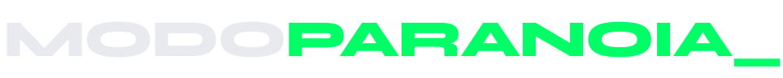
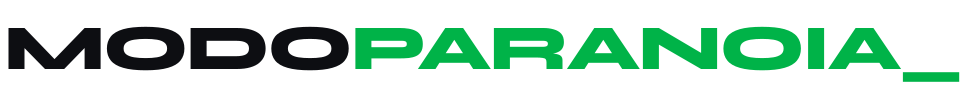
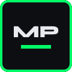
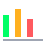
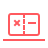
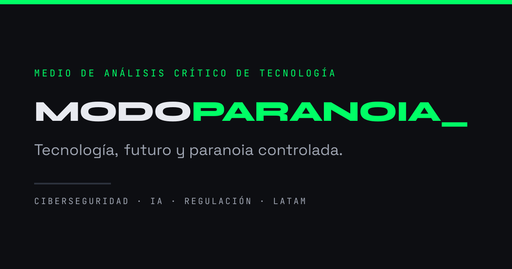
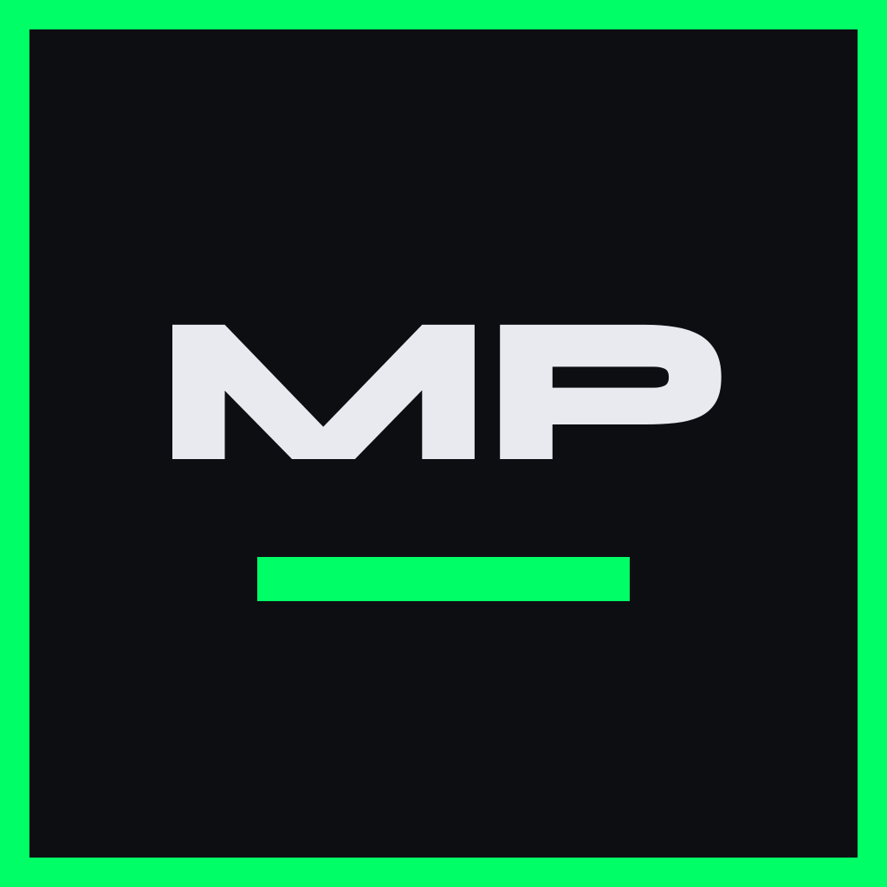

Tecnología, futuro y paranoia controlada.
Lo que el medio promete a quien lo lee, en una frase que cabe en la biografía de cualquier red social.
Analizar la tecnología que viene antes de que cambie la forma en que vivimos, trabajamos o pensamos.
Sales entendiendo no solo qué pasó, sino qué te van a pedir que aceptes a cambio.
Ciberseguridad, privacidad, impacto social de la IA, regulación y hardware raro — siempre aterrizado en América Latina.
Quien busca specs, precios y reviews de compra. Eso ya lo hace Xataka mejor y con más gente.
Ajustada sobre la propuesta original. Los ratios de contraste están calculados contra el fondo Ónix según WCAG 2.1. Dos cambios importantes respecto al borrador inicial: el texto principal deja de ser blanco puro (reduce el halo en modo oscuro sin perder legibilidad) y las tarjetas ganan un borde propio, porque Carbono sobre Ónix solo alcanza 1,21:1 de separación — invisible sin ayuda.
Tres familias, todas de Google Fonts y libres. Syne para titulares con carácter, Space Grotesk para subtítulos e interfaz, Inter para lectura larga. JetBrains Mono aporta el guiño de terminal en metadatos y etiquetas.
La superintendencia lo aprobó en marzo y nadie escribió una línea al respecto. No hubo anuncio, no hubo rueda de prensa: hubo un anexo técnico de once páginas publicado un viernes. Lo leímos completo para que usted no tenga que hacerlo, y hay tres párrafos que deberían preocuparle.
La diferencia entre un medio con criterio y un blog enojado está en estos cuatro pares.
"El modelo funciona. El problema es quién decide cuándo se apaga."
"En un panorama cada vez más complejo, la IA plantea desafíos sin precedentes."
"Leímos los 34.000 caracteres de los términos. Hay tres que importan."
"Los expertos advierten sobre los riesgos potenciales de esta tecnología."
"Puede que me equivoque, y si me equivoco lo voy a escribir aquí."
"Como siempre dijimos, esto era evidente desde el principio."
Sarcasmo dirigido a la promesa corporativa.
Sarcasmo dirigido al lector que todavía no entiende el tema.
Primera persona del plural para el medio ("leímos", "probamos"), primera del singular para la opinión que compromete ("creo que esto es un error").
Neutro latinoamericano con base colombiana. Sin voseo, sin "vosotros", sin anglicismos evitables. "Aprendizaje automático", no "machine learning", salvo que el término técnico sea el estándar real.
Ninguna pieza termina en "solo el tiempo lo dirá". Se cierra con una posición, una pregunta concreta o algo que el lector puede hacer hoy.
Cuatro formatos recurrentes con color y etiqueta propios. Evita que el sitio se lea como una plantilla repetida — que es exactamente lo que las políticas de spam de Google penalizan.
| Sección | Ritmo | Qué es | Color |
|---|---|---|---|
| Modo Autopsia | Mensual | Post-mortem de un producto o promesa que fracasó. Nadie lo hace en español. | Alerta |
| Lo bueno, lo malo y lo feo | Quincenal | Formato insignia. Tres actos sobre una tecnología concreta. | Verde / Ámbar / Alerta |
| Letra pequeña | Mensual | Leemos los términos de servicio, el paper o la resolución que nadie lee. | Ámbar |
| El Correo | Semanal | Newsletter. Tres cosas que pasaron, una que importa, y por qué. | Verde Profundo |
Cómo se ve el sistema aplicado.
Once páginas de anexo técnico publicadas un viernes. Aquí está lo que dicen.
Qué falló, quién lo sabía y por qué el siguiente lo va a repetir.
Lo que promete, lo que cuesta y la Ley 1581 de 2012 que nadie actualizó.
Archivos reales, no maquetas. Todos viven en docs/assets/logo/ y son SVG con el texto ya convertido a trazos: no dependen de que Syne esté instalada en la máquina que los dibuje, que es exactamente lo que falla cuando un logotipo lleva una etiqueta <text> dentro.




Treinta y ocho iconos de sistema, dibujados con las mismas reglas para que ninguno desentone. En el sitio no se cargan como imágenes: se insertan dentro del HTML al compilar, así heredan el color del texto y no cuestan una petición cada uno.
viewBox="0 0 24 24", trazo de 1.5, sin relleno. Los iconos de sección usan lienzo de 48 y trazo 2.
stroke-linecap="square" y stroke-linejoin="miter". Las esquinas son duras a propósito: el redondeo suaviza y esta marca no es suave.
El trazo es currentColor. El archivo suelto lleva además color="#E8EAF0" para verse fuera del sitio; dentro manda el contexto.

cita
menosUno por formato editorial, con el color de su sección escrito dentro para que el archivo suelto se vea bien. Dentro del sitio ese color se sustituye por el del contexto — salvo los colores puestos en elementos internos, que son deliberados.

Lo bueno, lo malo y lo feoVerde / Ámbar / Alerta
Modo AutopsiaAlertaCuatro texturas de 8×8 píxeles que se repiten. Sirven para separar bloques sin recurrir al verde, que tiene el cupo del 10% de la pantalla y se gasta rápido.
Lo que se ve cuando alguien pega un enlace del sitio en WhatsApp, en X o en LinkedIn. Va en PNG y no en SVG porque ninguna de esas plataformas acepta SVG como og:image: el SVG queda en el kit como fuente editable.

src/layouts/Base.astro. Fuente: assets/social/og-image-1200x630.svg
14,85 × el tamaño de fuente, medido, no estimado.